接下来让我们把后端和第 2 章节中做的前端连接起来。
在上一章节中，前端可以从作为后端的 json-server 中，也就是从地址 http://localhost:3001/notes 请求笔记列表。
后端现在的 URL 结构稍有不同，可以找到笔记的地址是 http://localhost:3001/api/notes。让我们改变前端应用 src/services/notes.js 中的 baseUrl 属性，如下：
import axios from 'axios'
const baseUrl = 'http://localhost:3001/api/notes' //highlight-line
const getAll = () => {
const request = axios.get(baseUrl)
return request.then(response => response.data)
}
// ...
export default { getAll, create, update }
现在前端向 http://localhost:3001/api/notes 的 GET 请求由于某些原因无法进行：
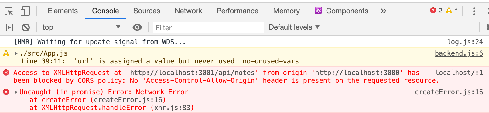
这里发生了什么？我们明明可以从浏览器和 Postman 访问后端，没有任何问题。
同源策略和 CORS
问题在于一个叫做“同源策略”的东西。一个 URL 的“源”是由协议（又称“模式”）、主机名和端口组成的。
http://example.com:80/index.html
protocol: http
host: example.com
port: 80
当你访问一个网站（如 http://example.com）时，浏览器会向托管该网站（example.com）的服务器发出请求。服务端发回的响应是一个 HTML 文件，HTML 文件可能包含一个或多个外部资源的引用，这些外部资源可能托管在与 example.com 相同的服务器上，也可能托管在其他网站上。当浏览器在 HTML 源码中看到 URL 引用时，就会发出请求。如果请求的 URL 与 HTML 源码的 URL 相同，浏览器便会正常处理响应。但如果所请求资源的 URL 与 HTML 源码的不同源（模式、主机、端口任一不同），浏览器就会检查 Access-Control-Allow-Origin 响应标头。如果该标头包含 HTML 源码的 URL 和通配符 *，那么浏览器就会处理响应；否则浏览器会拒绝处理并抛出错误。
同源策略是浏览器实现的一种旨在防止会话劫持等其他安全漏洞的安全机制。
为了允许合法的跨源请求（请求不同源的 URL），W3C 提出了一种名为 CORS（跨源资源共享，Cross-Origin Resource Sharing）的机制。根据维基百科：
跨源资源共享（CORS）是一种允许网页上的限制性资源（如字体）从所托管的域之外的域请求的机制。网页可以自由嵌入跨源图像、样式表、脚本、内联框架和视频。某些“跨域”请求，特别是 Ajax 请求，在默认情况下会被同源安全策略所禁止。
问题在于，默认情况下，浏览器中运行的应用的 JavaScript 代码只能与同源的服务端通信。
因为我们的服务端在 localhost 的 3001 端口，而我们的前端在 localhost 的 5173 端口，它们没有相同的源。
记住，同源策略和 CORS 并不是 React 或 Node 特有的。它们是关于 web 应用安全运行的通用原则。
我们可以通过使用 Node 的 cors 中间件来允许来自其他源的请求。
在你后端的仓库中，用下列命令安装 cors
npm install cors
使用中间件，允许来自所有源的请求：
const cors = require('cors')
app.use(cors())
**注：**当你启用 cors 的时候，你应该考虑下打算怎么设置 cors。对于我们应用的情况，因为不希望把后端暴露给整个生产环境，所以让后端只对特定的源（如前端）启用 cors 会更合理。
现在前端的大多数功能都能用了！后端还没有实现更改笔记重要性的功能，所以自然前端更改笔记重要性的功能还用不了。我们将在后面修复。
你可以在 Mozilla 的网页上阅读更多关于 CORS 的信息。
我们现在应用的配置类似这样：
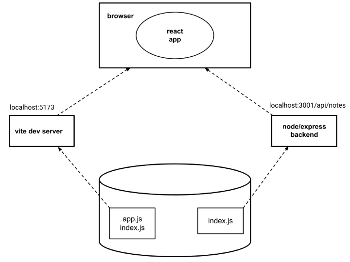
浏览器中运行的 React 应用现在从运行在 localhost:3001 的 Node/Express 后端获取数据。
把应用部署到互联网上
既然全栈已经准备好了，让我们把应用部署到互联网上。
现今可用于在互联网上托管应用的服务日益增多。像 PaaS（平台即服务，Platform as a Service）这类对开发者友好的服务会负责安装运行环境（例如 Node.js），可能还会提供数据库等各种服务。
在过去十几年里，Heroku 一直统治着 PaaS 领域。不幸的是，Heroku 的免费版服务在 2022 年 11 月 27 日结束了。这对许多开发者，尤其是学生，非常不利。如果你愿意花点钱，Heroku 仍然是非常切实可行的选择。他们也有学生计划来为学生提供一些免费额度。
我们在此介绍两个服务：Fly.io 和 Render。Fly.io 服务可以更灵活地配置，但最近也要付费了。Render 提供一定的免费计算时间，所以如果你想不花钱完成本课程，那就选 Render。在某些情况下 Render 也更易上手，因为 Render 不需要在你自己的机器上安装任何软件。
还有一些其他免费的托管选项也可用于本课程，至少对于除了第 11 章节（CI/CD）以外的所有内容都没有问题，第 11 章节有一道练习可能会在其他平台上比较麻烦。
部分课程参与者还使用过以下服务：
如果你知道易用且免费的 Node.js 托管服务，请告诉我们！
不管是 Fly.io 还是 Render，我们都需要在后端 index.js 最下面，将应用使用端口的定义改成：
const PORT = process.env.PORT || 3001 // highlight-line
app.listen(PORT, () => {
console.log(`Server running on port ${PORT}`)
})
现在我们使用的是环境变量 PORT 中定义的端口，如果未定义环境变量 PORT，则使用端口 3001。Fly.io 和 Render 都可以基于环境变量设置应用的端口。
Fly.io
注意，你可能需要向 Fly.io 提供你的信用卡号！
如果你决定使用 Fly.io，那么从按照这份指南安装 flyctl 可执行文件开始。然后，你需要创建一个 Fly.io 账号。
从在命令行运行以下命令登录开始
fly auth login
注意如果你的电脑上命令 fly 不可用，你可以试试更长的版本 flyctl。例如在 MacOS 上，两种命令都可用。
如果你无法在你的电脑上运行 flyctl，你可以试试 Render（见下节），它不需要你在电脑上安装任何软件。
在应用的根目录运行下列命令来初始化应用
fly launch --no-deploy
给应用取一个名字，或者让 Fly.io 自动生成一个。选择运行应用的服务器的地区。不要为应用创建 Postgres 数据库，也不要创建 Upstash Redis 数据库，这些都不需要。
Fly.io 会在应用的根目录创建一个名为 fly.toml 的文件，我们可以配置这个文件。为了让应用能正常启动并运行，我们可能需要对配置做一点小的补充：
[build]
[env]
PORT = "3001" # add this
[http_service]
internal_port = 3001 # ensure that this is same as PORT
force_https = true
auto_stop_machines = true
auto_start_machines = true
min_machines_running = 0
processes = ["app"]
我们已经在 [env] 部分定义了环境变量 PORT，从而让应用使用正确的端口（在 [http_service] 中定义）来启动服务端。
现在可以把应用部署到 Fly.io 服务器了。使用以下命令：
fly deploy
如果一切顺利，应用应该会启动并运行。可以用下列命令在浏览器中打开应用
fly apps open
一个特别重要的命令是 fly logs。该命令可以用来查看服务端日志。最好始终保持日志可见！
**注：**Fly 可能会为你的应用创建 2 台机器。如果出现这种情况，应用中的数据状态在不同请求间可能不一致，也就是说，你会有两台有各自独立的 notes 变量的机器，你可能 POST 到一台机器，然后下一次 GET 可能去到另一台机器。你可以用命令“$ fly scale show”检查机器数量，如果 COUNT 大于 1，则可以用“$ fly scale count 1”强制让 COUNT 为 1。也可以在仪表板上查看机器数量。
**注意：**在某些情况下（原因尚不明确），运行 Fly.io 命令有出现过问题，特别是在 Windows WSL（Windows Subsystem for Linux）上。如果以下命令只是挂起，没有任何反应
flyctl ping -o personal
说明你的电脑出于某种原因无法连接到 Fly.io。如果遇到这种情况，这里 有一种可能的解决办法。
如果下面命令的输出类似这样：
$ flyctl ping -o personal
35 bytes from fdaa:0:8a3d::3 (gateway), seq=0 time=65.1ms
35 bytes from fdaa:0:8a3d::3 (gateway), seq=1 time=28.5ms
35 bytes from fdaa:0:8a3d::3 (gateway), seq=2 time=29.3ms
...
那么说明没有连接问题！
每当你对应用做出更改时，可以用命令把新版本部署到生产环境：
fly deploy
Render
注意，你可能需要向 Render 提供信用卡号！
下面假设你已经使用 GitHub 账号登录了。
登录后，创建一个新“web service”：
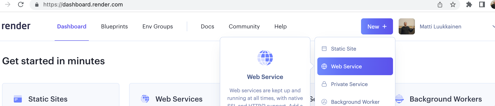
然后将应用的仓库连接到 Render：
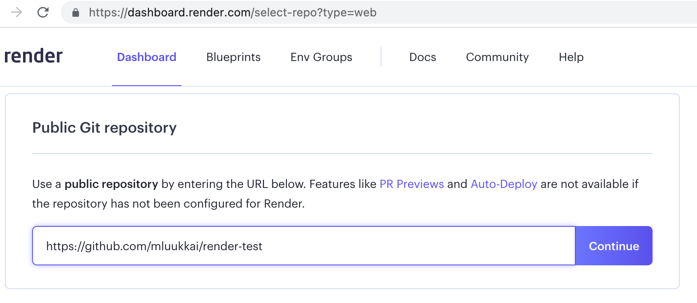
看起来连接要求应用的仓库是公开的。
接下来定义基本配置。如果应用不在仓库的根目录下，则需在 Root directory 中填写正确的路径：
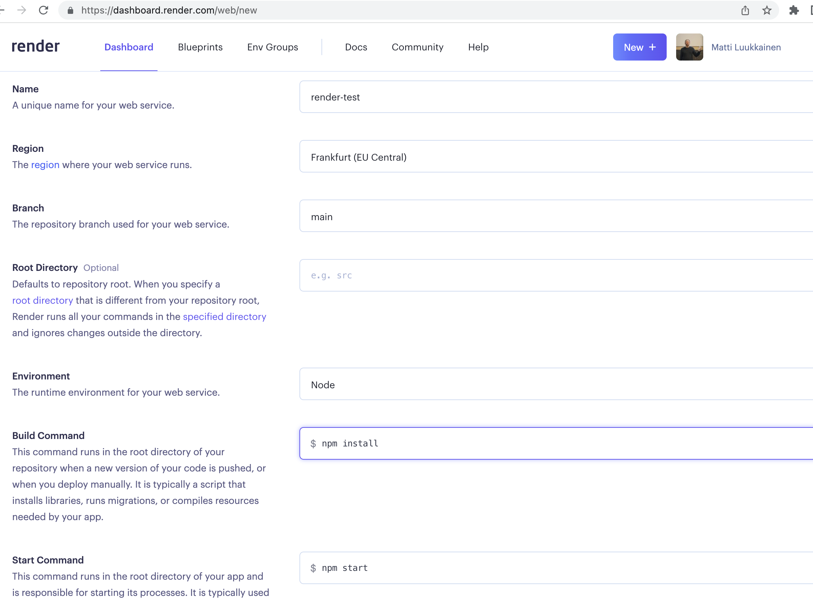
之后，应用将在 Render 上启动。仪表板会显示应用的状态和运行的 URL：
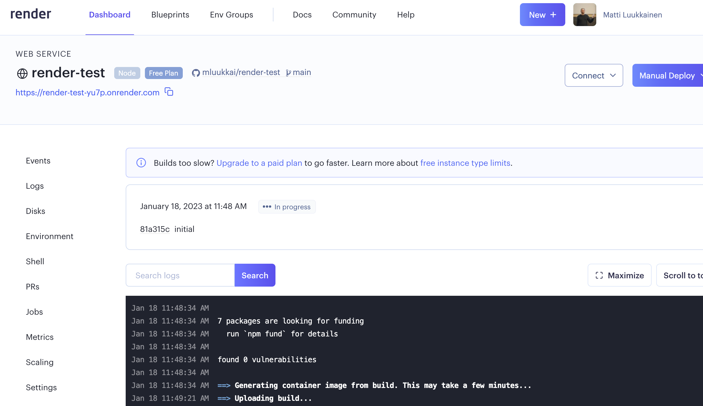
根据文档，每次提交到 GitHub 都会自动重新部署应用。不过因为什么原因，不会总是重新部署。
幸运的是，也可以手动重新部署应用：
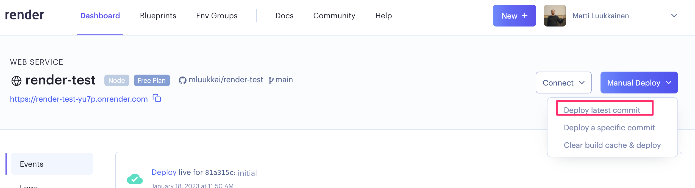
同样，可以在仪表板中查看应用的日志：
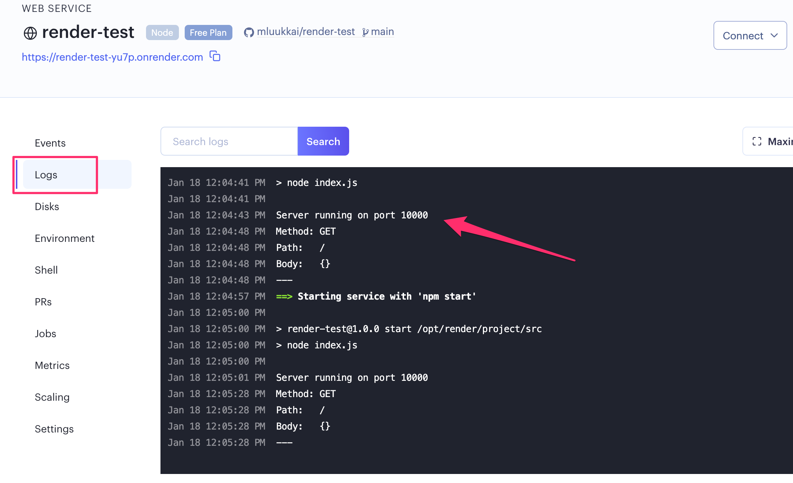
我们现在从日志中发现应用在端口 10000 启动。应用的代码通过环境变量 PORT 获取正确的端口，因此必须将后端的 index.js 文件更新成：
const PORT = process.env.PORT || 3001 // highlight-line
app.listen(PORT, () => {
console.log(`Server running on port ${PORT}`)
})
构建前端的生产版本
目前为止，我们一直在开发模式中运行 React 代码。在开发模式下，应用会配置成给出清晰的错误信息，立即向浏览器渲染代码变化，等等。
当部署应用时，我们必须构建一个生产版本或者说一个为生产优化的应用版本。
用 Vite 创建的应用的生产版本可以用命令 npm run build 构建。
让我们在第 2 章节开发的笔记前端项目的根目录运行这个命令。
这会创建一个名为 dist 的目录，其中只包含应用的 HTML 文件（index.html）和目录 assets。应用的 JavaScript 代码的极简化版本会在 dist 目录中生成。即使应用的代码在多个文件中，所有 JavaScript 都会被极简化进一个文件。应用所有依赖项的所有代码也会被极简化进这单个文件中。
极简化的代码不是很可读。代码的开头类似这样：
!function(e){function r(r){for(var n,f,i=r[0],l=r[1],a=r[2],c=0,s=[];c<i.length;c++)f=i[c],o[f]&&s.push(o[f][0]),o[f]=0;for(n in l)Object.prototype.hasOwnProperty.call(l,n)&&(e[n]=l[n]);for(p&&p(r);s.length;)s.shift()();return u.push.apply(u,a||[]),t()}function t(){for(var e,r=0;r<u.length;r++){for(var t=u[r],n=!0,i=1;i<t.length;i++){var l=t[i];0!==o[l]&&(n=!1)}n&&(u.splice(r--,1),e=f(f.s=t[0]))}return e}var n={},o={2:0},u=[];function f(r){if(n[r])return n[r].exports;var t=n[r]={i:r,l:!1,exports:{}};return e[r].call(t.exports,t,t.exports,f),t.l=!0,t.exports}f.m=e,f.c=n,f.d=function(e,r,t){f.o(e,r)||Object.defineProperty(e,r,{enumerable:!0,get:t})},f.r=function(e){"undefined"!==typeof Symbol&&Symbol.toStringTag&&Object.defineProperty(e,Symbol.toStringTag,{value:"Module"})
由后端提供静态文件
部署前端的一个选择是将构建的生产版本（dist 目录）复制到后端的根目录中，并配置后端来让主页显示为前端的主页（文件 dist/index.html）。
我们首先把前端的生产版本复制到后端的根目录下。在 Mac 或 Linux 电脑上，可以在前端目录下用命令复制
cp -r build ../notes-backend
如果你使用的是 Windows 电脑，你可以用 copy 或 xcopy 命令。再或者，直接复制粘贴。
后端目录现在应该是这样的：
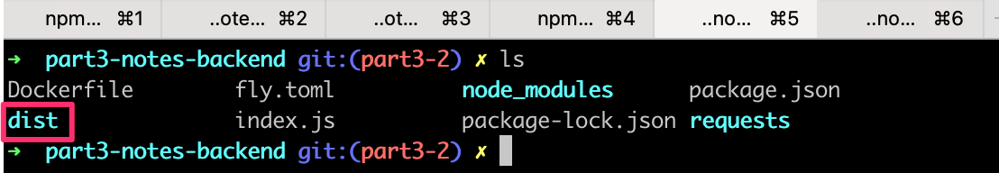
为了使 Express 显示获取的静态内容、页面 index.html 和 JavaScript 等，我们需要一个 Express 内置的中间件，叫做 static。
当我们在中间件的声明中加入以下内容时
app.use(express.static('dist'))
每当 Express 收到一个 HTTP GET 请求时，它首先会检查 dist 目录是否包含与请求地址对应的文件。如果找到了正确的文件，Express 就会返回这个文件。
现在，对地址 www.serversaddress.com/index.html 或 www.serversaddress.com 的 HTTP GET 请求将显示 React 前端。对地址 www.serversaddress.com/api/notes 的 GET 请求将由后端代码处理。
由于我们前后端都在同一个地址的情况，我们可以将 baseUrl 声明为一个相对 URL。这意味着我们可以省略声明服务端的部分。
import axios from 'axios'
const baseUrl = '/api/notes' // highlight-line
const getAll = () => {
const request = axios.get(baseUrl)
return request.then(response => response.data)
}
// ...
更改后，我们必须重新构建前端的生产版本，并将其复制到后端的根目录。
现在可以从后端的地址 http://localhost:3001 使用应用：
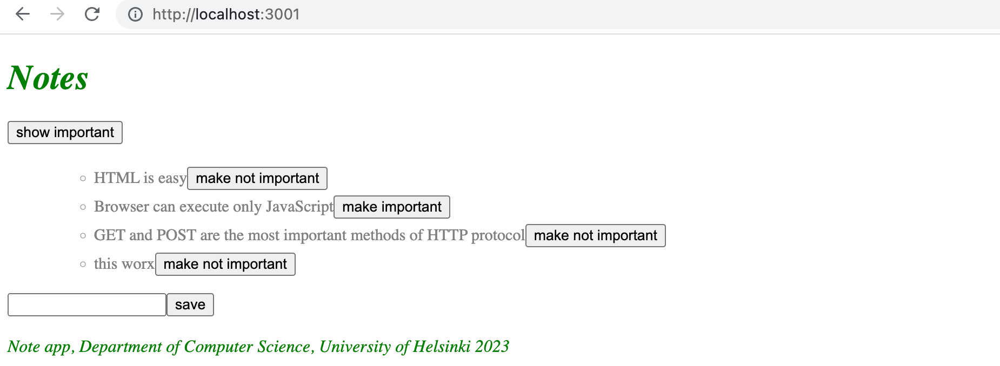
我们的应用现在的运行方式与我们在第 0 章节学习的单页应用的示例应用完全相同。
当我们用浏览器进入 http://localhost:3001 地址时，服务端从 dist 目录返回 index.html 文件。文件内容如下：
<!doctype html>
<html lang="en">
<head>
<meta charset="UTF-8" />
<link rel="icon" type="image/svg+xml" href="/vite.svg" />
<meta name="viewport" content="width=device-width, initial-scale=1.0" />
<title>Vite + React</title>
<script type="module" crossorigin src="/assets/index-5f6faa37.js"></script>
<link rel="stylesheet" href="/assets/index-198af077.css">
</head>
<body>
<div id="root"></div>
</body>
</html>
该文件包含获取定义应用样式的 CSS 样式表的指令，以及一个令浏览器获取应用的 JavaScript 代码——实际的 React 应用的 script 标签。
React 代码从服务端地址 http://localhost:3001/api/notes 获取笔记，并将其渲染到屏幕上。服务端和浏览器之间的通信可以在开发者控制台的网络标签页中看到：
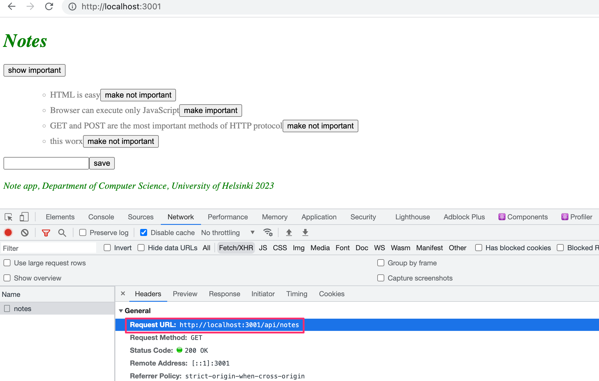
准备用于产品部署的配置类似这样：
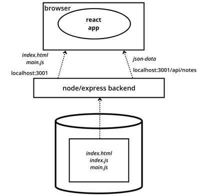
与在开发环境中运行应用时不同，现在所有东西都运行在 localhost:3001 的同一个 Node/Express 后端中。当浏览器进入页面时，文件 index.html 被渲染。这会让浏览器获取 React 应用的生产版本。一旦 React 应用开始运行，它就从地址 localhost:3001/api/notes 获取 JSON 数据。
把整个应用部署到互联网上
在确保应用的生产版本在本地正确运行后，我们就准备好将整个应用部署到选择的托管服务上了。
对于 Fly.io，用以下命令重新部署
fly deploy
注：项目目录下的 .dockerignore 文件会列出不会在部署时上传的文件。可能会默认忽略 dist 目录。如果出现这种情况，就从 .dockerignore 文件中删除该目录的引用，以确保应用能正确部署。
对于 Render，在 git 中提交更改，并再次将代码推送到 GitHub。确保后端的 git 没有忽略 dist 目录。推送到 GitHub 可能就可以了。如果没有自动部署，就在 Render 的仪表板中选择“manual deploy”。
应用运行得很完美，只是我们还没有在后端添加改变笔记重要性的功能。
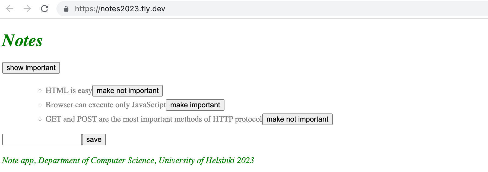
注：还无法改变笔记的重要性，后端还没有实现这一功能。
我们的应用将所有笔记保存在一个变量中。如果应用崩溃或重启，所有数据就都会消失。
应用需要一个数据库。在我们引入数据库之前，让我们先仔细看一下几件事情。
现在的配置类似这样：
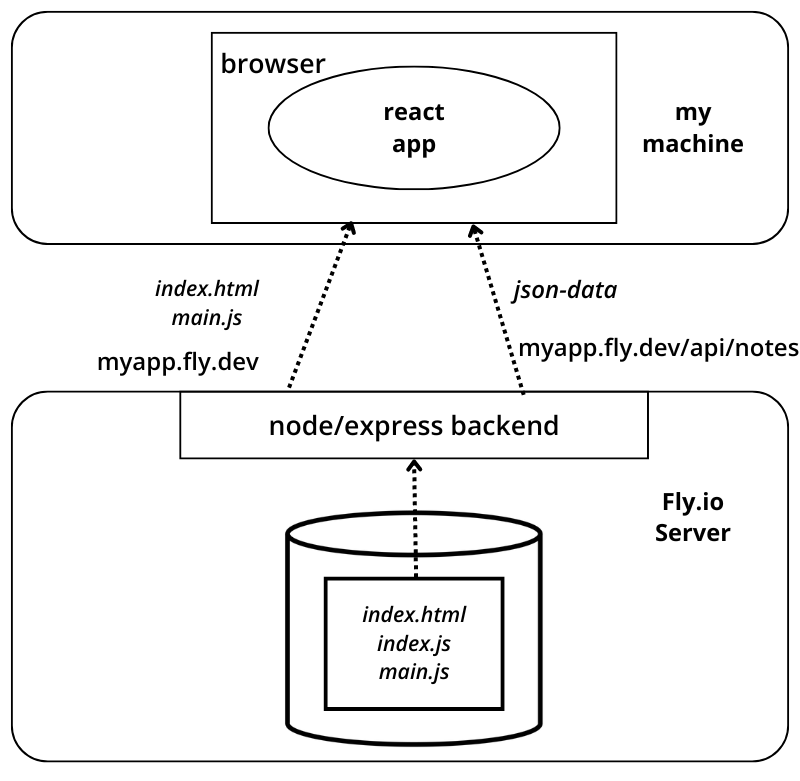
Node/Express 后端现在在 Fly.io/Render 的服务器上。当访问根地址时，浏览器就会加载并执行 React 应用，React 应用又会从 Fly.io/Render 服务器获取 JSON 数据。
优化前端的部署
为了让构建一个新的前端生产版本不需要额外的手动操作，让我们在后端仓库的 package.json 中添加一些 npm 脚本。
Fly.io 脚本
脚本类似这样：
{
"scripts": {
// ...
"build:ui": "rm -rf dist && cd ../notes-frontend/ && npm run build && cp -r dist ../notes-backend",
"deploy": "fly deploy",
"deploy:full": "npm run build:ui && npm run deploy",
"logs:prod": "fly logs"
}
}
脚本 npm run build:ui 构建前端，并将生产版本复制到后端仓库下。脚本 npm run deploy 将当前的后端发布到 Fly.io。
npm run deploy:full 结合了 npm run build:ui 和 npm run deploy 两个脚本。
还有一个脚本 npm run logs:prod 来显示 Fly.io 的日志。
注意脚本 build:ui 中的目录路径取决于前后端目录在文件系统中的位置。
Windows 用户注意事项
注意 build:ui 中标准的 shell 命令无法在 Windows 中原生运行。Windows 的 Powershell 运行的方式不同，这时脚本应写成
"build:ui": "@powershell Remove-Item -Recurse -Force dist && cd ../frontend && npm run build && @powershell Copy-Item dist -Recurse ../backend",
如果脚本在 Windows 上还是无法运行，确保你使用的是 Powershell 而非命令提示符（cmd）。如果你安装过 Git Bash 或者其他类 Linux 的终端，你也可以在 Windows 上运行类 Linux 命令。
Render
注意：当你尝试将后端部署到 Render 时，确保后端有一个专门的仓库并通过 Render 部署该 GitHub 仓库。尝试通过你的 Fullstackopen 仓库部署通常会抛出“ERR path ....package.json”错误。
对于 Render，脚本类似这样
{
"scripts": {
//...
"build:ui": "rm -rf dist && cd ../frontend && npm run build && cp -r dist ../backend",
"deploy:full": "npm run build:ui && git add . && git commit -m uibuild && git push"
}
}
脚本 npm run build:ui 会构建前端并将生产版本复制到后端仓库下。npm run deploy:full 还包含更新后端仓库必要的 git 命令。
注意脚本 build:ui 中的目录路径取决于前后端目录在文件系统中的位置。
注 在 Windows 上，npm 脚本的默认 shell 是 cmd.exe，npm 脚本默认在 cmd.exe 中执行，不支持 bash 命令。为了让上述 bash 命令生效，你可以将默认 shell 改为（Git for Windows 默认安装的）Bash，方法如下：
npm config set script-shell "C:\\Program Files\\git\\bin\\bash.exe"
另一个选择是使用 shx。
代理
对前端的更改导致它在开发模式下（用 npm run dev 命令启动时）无法运行，因为前端无法与后端连接。
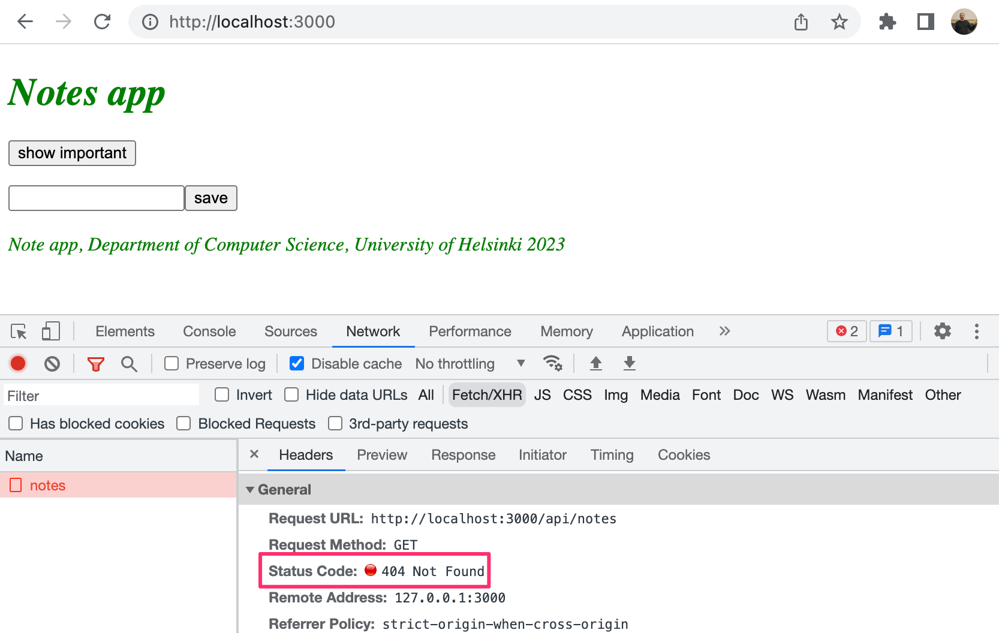
这是由于后端地址改成了相对 URL：
const baseUrl = '/api/notes'
因为在开发模式下，前端的地址是 localhost:5173，对后端的请求会发送到错误的地址 localhost:5173/api/notes。而后端是在 localhost:3001。
如果项目是用 Vite 创建的，那么问题很容易解决。只需在前端目录的 vite.config.js文件中添加以下声明就可以了：
import { defineConfig } from 'vite'
import react from '@vitejs/plugin-react'
// https://vitejs.dev/config/
export default defineConfig({
plugins: [react()],
// highlight-start
server: {
proxy: {
'/api': {
target: 'http://localhost:3001',
changeOrigin: true,
},
}
},
// highlight-end
})
重启后，React 开发环境将充当代理。如果 React 代码向以 http://localhost:5173/api 开头的路径发送 HTTP 请求，那么请求将被转发到 http://localhost:3001 的服务端上。向其他路径发送的请求依然由开发服务端正常处理。
现在前端也能正确运行。在开发模式和生产模式下都能与服务端一起运行。从前端的角度来看，因为所有的请求都是发送到 http://localhost:5173 的，也就是同源的，那么就不再需要后端的 cors 中间件了。因此，我们可以从后端的 index.js 文件中删除对 cors 库的引用，并从项目的依赖项中删除 cors：
npm remove cors
我们现在已经成功将整个应用部署到互联网上了。此外还有许多方法来实现部署。比如，将前端代码部署为自己的应用在某些情况下是一个明智的方法，因为这样可以方便实现自动化的部署管道。部署管道是指通过不同测试和质量检查，将代码从开发者的电脑转移到生产环境的一种自动化和可控的方式。本课程第 11 章节涵盖了这一话题。
当前的后端代码可以在 Github 的 part3-3 分支中找到。前端代码的更改在 frontend repository 的part3-1分支中。